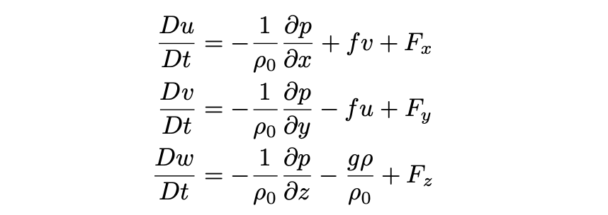
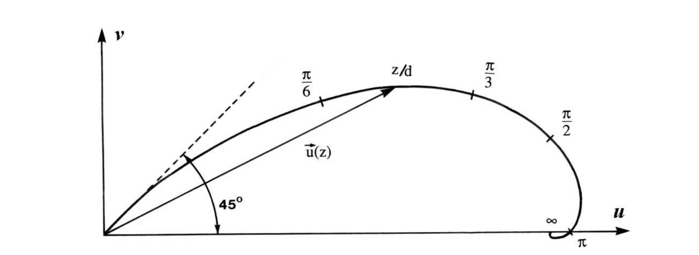
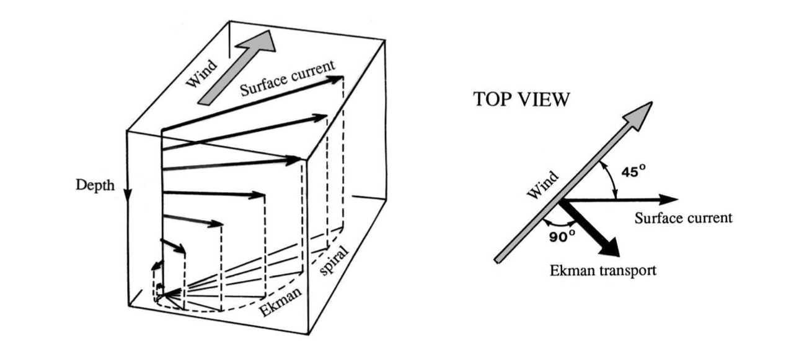

Ekman transport#
Starting from the equations of motion
We will start with the usual momentum equations:
 where \(f=2\Omega\sin\varphi\) is the Coriolis parameter with latitude \(\varphi\).
As a simple representation, we have written the frictional forces as \((F_x,F_y,F_z)\). In this lecture, we’ll consider one main source of friction in the ocean: between the ocean and atmosphere. A similar process occurs due to the friction between the ocean and seafloor (called bottom Ekman transport).
Main points:
Ekman transport occurs in the boundary layer transport due to tangential stress (friction) between ocean currents and the seafloor, or between the atmosphere and ocean.
Ekman transport (vertical integral of the Ekman spiral) does not depend on viscosity and is \(90^\circ\) to the right of the wind in the northern hemisphere (to the left of the wind in the southern hemisphere).\footnote{Know these equations. We will apply them in coursework.}
Side note: Surface Ekman transport is computed with units of m\(^2\)/s, and should be integrated in a horizontal direction to produce a true volume transport (which must have units of m\(^3\)/s).
Boundary layers, stresses and fluxes#
Friction between a fluid and a boundary causes velocity shear. Near a fixed boundary, a fluid will have near zero velocity, while in the interior of the fluid it will have some background circulation. The region of transition between this background circulation and the fixed boundary is called the boundary layer. Viscosity is a measure of the resistance of a fluid to deformation by the boundary. Both friction and viscosity resist motion.
Suppose you had an air hockey table, and were hitting the puck back and forth–it slides smoothly because the air reduces the friction and the surface is smooth. If you replaced the surface with sand paper, the same hit to the puck would result in much less motion. For a fluid, the viscosity is a measure of resistance to deformation. Honey, which is relatively viscous will resist deformation, compared to water.
In the absence of rotation, the velocity profile has a logarithmic shape beginning some distance from the boundary, while in the near vicinity of the boundary, molecular viscosity applies and the boundary layer is called laminar.
Shear stress (horizontal momentum equations)#
Here we will assume that we can represent the friction forces (accelerations) in the equations of motion \((F_x,F_y,F_z)\) by a viscous term where
where \(\nu_E\) is an eddy viscosity.
This is similar to Newton’s law for a viscous fluid, where a tangential (shear) stress \(\tau\) is proportional to the velocity shear, \(\tau\propto\frac{du}{dz}\). But here we are replacing molecular viscosity \(\nu\) with an eddy viscosity \(\nu_E\).
The gradient in the stress \(\tau\) generates a force, and its vertical derivative dominates. This is because the difference in vertical and horizontal scales in the atmospheric and oceanic boundary layers (\(\delta\approx 1000\) m for the atmosphere, 10 - 100 m for the ocean). To include \(\tau\) in a force with the appropriate units, we have
– skip from here
Ekman spiral (not to be covered in RegOz)#
At the sea floor, assuming steady state (so the material derivatives \(Du/Dt=Dv/Dt=0\)), no horizontal gradients in velocity, a flat bottom and \(w=0\) at the bottom, the equations of motion simplify to

then aligning the interior geostrophic velocity with the \(x\)-direction (so \(v_g=0\)), can write equations governing the interior flow as
These derivatives do not depend on \(z\), so we can then substitute back into the equations to get
We can seek a solution of the form \(u=u_g+Ae^{\lambda z}\) and \(v=Be^{\lambda z}\) where \(\lambda\) is some decay scale and \(A\) is an amplitude. Verify that \begin{equation} \nu_E^2\lambda^4+f^2=0\ .\label{hey} \end{equation} This gives solutions of the form
where \(d=\sqrt{\frac{2\nu_E}{f}}\) and \(i=\sqrt{-1}\). (You can verify that this is an appropriate solution by substituting it into the equation.
These look fairly complicated, but when you plug them into the expressions for \(u\) and \(v\), and throw out any exponentially growing solutions, you end up with equations like

Note that the direction of the spiral is clockwise as depth increases, and that the amplitude decreases as depth increases. The surface winds are roughly \(45^\circ\) to the right of the wind.


The Ekman spiral describes the velocity profile in the Ekman layer. The distance over which the Ekman velocity approaches the interior velocity (\(\bar{u}\)) is \(d\). This thickness is called the Ekman depth. The net transport associated with the applied stress can be computed by integrating the velocity over the boundary layer. This will be called the Ekman transport.
– unskip from here
Surface Ekman layer#
In the above, the Ekman layer was computed for the stress between a geostrophic ocean current and the sea floor. Now we’ll look at the same process, but determined by the stress between the ocean surface and atmospheric winds.
Atmospheric boundary layer - wind stress#
In the atmosphere, the wind stress is calculated from velocity fluctuations, where \(u_{10}\) is the velocity 10 m above the sea surface. Relying on the formulation of Reynold’s stresses (where the stress is proportional to the velocity fluctuations, squared), wind stress is calculated as
Here, \(u_10\) is the wind velocity 10 m above the sea surface. A typical density for air is \(\rho_a=1.2\) kg/m\(^2\), and the drag coefficient can be estimated from winds as
Note that this stress is in the direction of the wind velocity, but scales with the squared-magnitude of the winds. (Note also that the formulation for the drag coefficient has various forms in published literature, and this one given here may not be the most appropriate in all situations.)
Ekman transport#
We have the same equations as before, (\ref{ekman1})-(\ref{ekman3}), but now the form of the stress will be due to surface wind stress. (Note that stress is due to the difference in the surface currents and surface winds, but in most places the surface winds dominate).
As before, we will assume steady state (so neglecting \(Du/Dt\) and \(Dv/Dt\)), and also that there is a background geostrophic velocity that we will separate from an Ekman velocity as
where the \(u_g\) satisfies geostrophic balance.
Recall: When we looked at hydrostatics, we divided pressure into the part that exactly balanced hydrostatic pressure for a constant density, and the leftover bits. This is similar.
For the equations which define the surface Ekman spiral, see BCR chapter 8. Here, we will use the \(\tau\) side of equation (\ref{viscous}) to get
written generically as \(X\) for stress in the \(x\)-direction and \(Y\) for stress in the \(y\)-direction, and where \(X=\rho_0\nu_E\partial{u_e}/\partial{z}\) and \(Y=\rho_0\nu_E\partial{v_e}/\partial{z}\). Both \(X\) and \(Y\) depend on depth.
At the surface, the stress due to the viscous shear in the ocean must match the stress applied at the surface by the winds \((\tau^x,\tau^y)\), as
By vertically-integrating the Ekman spiral (the solution to the Ekman equations (\ref{ekmanX}) and (\ref{ekmanY})), we can determine the Ekman transport,
where the capital \(U_e\) and \(V_e\) represent ``Ekman (volume) transport’’.
This gives
which can be calculated directly from the surface wind stress, \(\tau^x\) and \(\tau^y\) without regard to the details of eddy viscosity \(\nu_E\). While the shape of the Ekman spiral does depend on how momentum is transferred downwards over the Ekman layer, the net transport does not.
Note that (volume) transport typically has units of m\(^3\)/s, but when we talk about Ekman transport, we will often compute it with units of m\(^2\)/s. If we compute the transport
Note also that the meridional transport \(V_e\) depends on the zonal wind stress \(\tau^x\), and the zonal transport \(U_e\) depends on the meridional wind stress. In this way, the Ekman transport is \(90^\circ\) to the right of the wind in the northern hemisphere (and to the left of the wind in the southern hemisphere).
 Surface Ekman layer. Figure drawn for the Northern Hemisphere (\(f>0\)) with deflection to the right of the surface stress. BCR Fig 8.7
Ekman transport due to the winds may vary over different regions of the ocean. This means that Ekman transport variations can cause water to pile up or be drawn down, something we call “Ekman pumping” or “Ekman suction”.
This is a really cool thing where we find that while wind stresses apply to the top 100~m or so, through Ekman pumping, they can affect ocean circulation in the top 1000~m or more. We’ll see this more when we talk about Sverdrup transport.
Real world#
Ekman transport in the ocean is very robust. If you know the wind stress in a particular location, you can calculate the Ekman transport in the surface layer of the ocean and know that it will be \(90^\circ\) to the right of the wind.
Near coastlines, Ekman transport can generate on-shore or off-shore transports, which then drive upwelling or downwelling at the coast. Upwelling can be favorable to biology, by bringing up nutrients to the euphotic (light-illuminated) zone.
Over large scales (across ocean gyres), variations (gradients) in Ekman transport can also drive convergences or divergences, with associated downwelling or upwelling. Large-scale gradients in wind stress (wind stress curl) forms the gyres pressent in nearly every ocean basin.